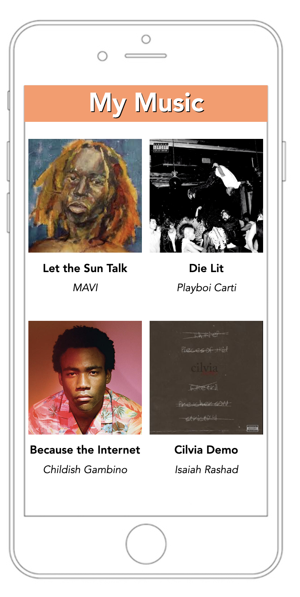
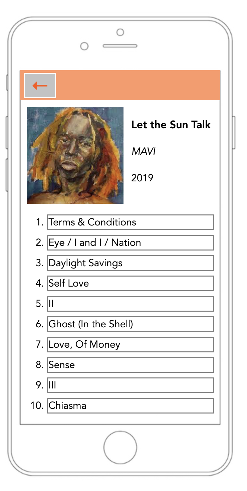

In this project, I created a website that displays some of my favorite albums and the tracklist for one of those albums. I used HTML and CSS to create both the pages seen above. The image for Let the Sun Talk links from the albums page to the tracklist page. The tracklist page also features a back button to return to the albums page.
Click here to return to the home page.